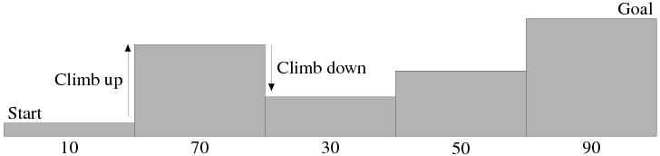

Time Limit: 3 sec
ある国で「サイゾウ」というテレビ番組が流行している． この番組は参加者がフィールドアスレチックに挑戦し， 見事攻略すれば賞金をもらえるというものである．
フィールドアスレチックは高さが異なるブロックを一列に並べて作られていて， 攻略のためにはいかにして段差を登り降りするかが重要になる （図1）． この番組に参加することになったあなたの友人は， フィールドアスレチックの構造が与えられたときに， 登らなければならない最大の段差と降りなければならない最大の段差を 計算するプログラムを書いてほしいと， 凄腕プログラマーであるあなたに依頼してきた．
|  |
| 図1: アスレチックの構造の例（入力例の最初のデータセット）． |
入力の1行目にはデータセットの個数 t (0 < t ≤ 100) が与えられる． この行に引き続き t 個のデータセットが与えられる．
データセットの1行目はフィールドアスレチックを構成している ブロックの個数 n (2 ≤ n ≤ 100) である． 2行目にはスタートからゴールまでのブロックの高さを示す整数が 順に n 個与えられる． 1番目がスタート， n番目がゴールに対応している． これらの整数は1つの空白文字で区切られている． 各ブロックの高さ h は 0 < h ≤ 1000 を満たす．
各データセットに対し， 登らなければならない最大の段差の大きさと， 降りなければならない最大の段差の大きさを， 1つの空白文字で区切って1行に出力せよ． なお，登る段差がない，または降りる段差がない場合は， 対応する最大の段差の大きさは 0 とすること．
5 5 10 70 30 50 90 2 20 100 2 100 30 3 50 50 50 7 123 45 678 901 234 567 890
60 40 80 0 0 70 0 0 633 667